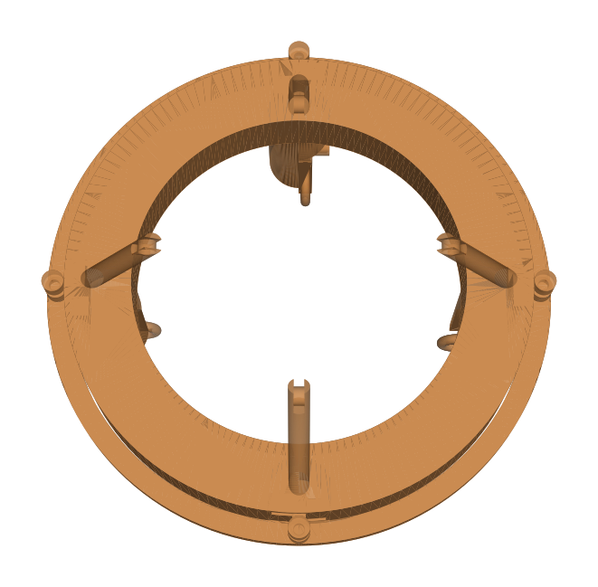

Case study · Duke BME Design Fellows · Summer 2026
A one-slide stage for a portable LED microscope
A purely mechanical unlock, slide, and lock mechanism that moves a cup of LEDs between a lab's two microscope configurations in under 5 seconds.

The problem
The lab images mice with a portable LED microscope that runs in two configurations. Switching between them took minutes of hands-on adjustment, while the setup had to stay compatible with the lab's equipment and leave room to work with the mouse.
Let a researcher switch the microscope between its two configurations quickly, with no tools and no electronics, while keeping clear access to the mouse.
Process
Scope with the client May 2026
Met with the lab to learn how the microscope is used and what each configuration needs.
Prototype fast and cheap
Built low-fidelity prototypes and brought them to repeated client meetings.
Redesign from scratch
Those meetings surfaced requirements I had missed, such as access to the mouse and the viewing angle. They didn't fit the first concept, so I started over with a complete redesign.
Model, print, and test Jul 2026
Modeled the full assembly in Onshape, 3D printed it, and checked it against the specs: switch time, 3D translation and rotation, mouse clearance, and fit with the client's setup.
How it works

- Slide. A sliding component carries the LED cup between the two configurations, one at each end of its travel: all the way up and all the way down.
- Lock. At each end, a lock holds it in place. At the top you slide the slider left, and at the bottom you slide it right.
- Unlock. To switch, you slide the lock back, move the cup to the other end, and lock again. There are no tools, screws, or electronics.
My role
I ran the client check-ins, wrote the specs, designed every part in Onshape, printed and assembled the prototypes, and tested them.
Results
- Cut a configuration change from minutes to under 5 seconds.
- Gives 3D translation and rotation and leaves clearance for the mouse.
- Fully compatible with the client's existing setup.